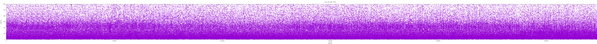

YouSlow Data Set Analysis and YouTube-like Stall Pattern Generation
Table of Contents
1 Instructions
This org-mode file contains all the code needed to perform the analysis of
YouSlow stall traces and the generation of YouTube-like stall patterns. The text
below intersperses prose and code, in a literate programming style, and along
with the data set and a couple of auxiliary files, it provides all the needed
tools to reproduce our results. If the file youtube_rebuffering_dist.txt is
not present in the same directory as this one, please uncompress the file
youtube_rebuffering_dist.txt.zip before moving on.
This file has been tested under Mac OS X, and it should work equally under Linux or other *nix operating systems. Operation under Windows will probably require minor modifications to the code below.
The requirements to perform all of the analysis and code generation are:
- A shell (e.g., bash, zsh)
- A Haskell compiler, and the
hstatspackage installed - Ruby
- Gnuplot
- R
It also requires a modern Emacs installation, with org-mode 8.x properly configured (org-mode is included with Emacs, so no additional packages should be required). The emacs-lisp code below ensures that all the org-babel modules needed are loaded.
(org-babel-do-load-languages 'org-babel-load-languages '( (sh . t) (haskell . t) (R . t) (ruby . t) (gnuplot . t) ))
If you are starting from the bare org-mode file and data set, you may want to execute the shell code below in order to create some required directories.
mkdir out 2>&1 >/dev/null mkdir YouSlow 2>&1 >/dev/null mkdir R 2>&1 >/dev/null
In order to proceed from only the org-mode file, you should first execute the
org-babel-tangle command, in order to generate all the relevant source code
from the literate code below. You can then proceed by executing the different
code blocks for compiling and running the code, as well as for creating the
plots and summary statistics.
2 YouSlow Data Analysis
What follows is a first step towards analysing the stalling patterns of the YouSlow data provided by Hyunwoo.
2.1 Data
The data is provided in the form of strings of '=' and '*'
characters, each representing a second of normal playback of stall time,
respeectively. Each record in the file is preceded by condition id number.
A pattern might look as follows:
96: *=================*==================*=====*=*==========================================
2.2 Analysis
We start by defining a couple of suitable data types to represent a playout.
module YouSlow.Analytics where
import Numeric.Statistics
import Data.List
data State = S_Play | S_Stall deriving Eq
instance Show State where
show S_Play = "="
show S_Stall = "*"
data Playout = Playout { seq_number :: Int
, video_duration :: Int
, stall_time :: Int
, pattern :: [State]}
instance Show Playout where
show p = show(seq_number p) ++ ": " ++ concatMap show (pattern p)
In order to parse the data provided into the types created, we use the following:
playoutFromString s = Playout {seq_number = sn, video_duration = d, stall_time = st, pattern = p}
where sn = read (head xs)::Int
p = statesFromString $ xs!!1
d = length.concat $ playEvents p
st = length.concat $ stallEvents p
xs = words.filter(/=':') $ s
playoutFromPattern sn p = Playout {seq_number = sn, video_duration = d, stall_time = st, pattern = p}
where d = length.concat $ playEvents p
st = length.concat $ stallEvents p
statesFromString = map readState
where readState '=' = S_Play
readState '*' = S_Stall
The stallEvents and playEvents auxiliary functions provide lists of
stalling and playout periods, respectively. This is useful for calculating
the averages and other stats, as well the structure of the stall events later
on.
groupStates s = filter (\e -> head e == s).groupBy (\x y -> x == y && y == s) groupStates' s = filter (\e -> fst (head e) == s).groupBy (\x y -> fst x == fst y && fst y == s) stallEvents = groupStates S_Stall playEvents = groupStates S_Play stallTimes :: Playout -> [(Int,Int)] stallTimes p = map getTimes $ groupStates' S_Stall $ zip (pattern p) [1..] where getTimes s = (snd.head $ s, length s)
We calculate some basic stats on the stall events:
stallStats s = (avg_duration, deviation, inter_arrival) where avg_duration = mean l deviation = stddevp l inter_arrival = mean p l = lengths $ stallEvents s p = lengths $ playEvents s lengths = map (fromIntegral.length)
The (simplified) Gilbert model for losses is a simple 2-state Markov chain, as shown below. It can be used to drive the generation of an ON/OFF process, which might be a good fit for analyzing and creating stall patterns in HTTP video streams.
Figure 1: The simplified Gilbert model
For the Gilbert parameters, we recall that if \(sr\) is the fraction of stalling time (of the total time considered, including both playout and stalls), and \(sd\) is the average stall duration, then we can calculate the \(p\) and \(q\) probabilities for transitioning between the playout state and the stall state, respectively, as: \(p = \frac{sr}{1-sr}.\frac{1}{sd}\), and \(q=1/sd\). In code, this is:
gilbertParams playout = (p,q) where sr = stalls / (play + stalls) play = fromIntegral . video_duration $ playout stalls = fromIntegral . stall_time $ playout sd = if ss > 0 then ss else 1 (ss,_,_) = stallStats.pattern $ playout p = (sr / (1 - sr)) / sd q = 1 / sd
To describe the structure of the stalling pattern, we calculate the normalized length of each stall event in the trace. This allows to consider cases where the stats are similar, but the actual way in which the patterns occur can affect the playout (as per Tobias Hoßfeld's "Pippi Longstocking Calculus" paper).
stallStructure playout = intercalate ":" (map show norm) where norm = map (\x -> ceiling (x/m)) se m = minimum se se = map (fromIntegral . length) $ (stallEvents . pattern) playout abstractStructure playout = intercalate ":" norm where norm = map (pick m) se m = minimum se se = map (fromIntegral . length) $ (stallEvents . pattern) playout pick n s | n == s = "U" | otherwise = "G"
The rest of the code takes care of filtering and printing the data as
tab-separated lines on stdout.
-- "id\tduration\ttotal_stall_time\tstall_ratio\tavg_stall_duration\tstall_duration_stddev\tavg_inter_stall_time\tGilbert_p\tGilbert_q\tstallStructuren\n" ++ formatStats p = (intercalate "\t" $ map show ls) ++ "\n" where (gp,gq) = gilbertParams p (sad,sdev,siat) = stallStats.pattern $ p stall_ratio p = (fromIntegral.stall_time $ p)/ (fromIntegral.video_duration $ p) ls = [seqno, vd, stime, sratio, sad, sdev, siat, gp, gq] seqno = fromIntegral $ seq_number p vd = fromIntegral $ video_duration p stime = fromIntegral $ stall_time p sratio = stall_ratio p minimumPlayout = 30 sane p = video_duration p > minimumPlayout && stall_time p > 0
module Main where
import YouSlow.Analytics
import Control.Monad
main = do
putStrLn "id\tduration\ttotal_stall_time\tstall_ratio\tavg_stall_duration\tstall_duration_stddev\tavg_inter_stall_time\tGilbert_p\tGilbert_q\tstall_structure\n"
go
go = do
line <- getLine
unless (null line) $
do
let p = playoutFromString line
when (sane p) $ (putStr.formatStats) p
go
We build the code like so:
ghc -O2 -o process_stalls stalls.hs
And run it:
./process_stalls < youtube_rebuffering_dist.txt > stats.tsv
3 Results
We take a quick look at the average stall durations, and their stddev using gnuplot:
set term png size 8000,600 set size 1.1,1 set key off set xlabel 'Sample' set ylabel 'Time (s)' set xrange [1:600000] set yrange [1:600] set title 'Avg. Inter-stall Times' set out 'figs/full_inter_stall_times.png' lt rgb "#87789E" plot 'stats.tsv' using 1:7 set yrange[1:300] set out 'figs/full_stall_durations.png' set title 'Stall durations' plot 'stats.tsv' using 1:5 lt rgb "#90789E" set out 'figs/full_stall_stddev.png' set title 'Stddev of Stall Durations' plot 'stats.tsv' using 1:6 lt rgb "#869E78" set term png size 1000,600 set size 1,1 set xrange [1:5000] set yrange [1:600] set title 'Avg. Inter-stall Times' set out 'figs/inter_stall_times.png' lt rgb "#87789E" plot 'stats.tsv' using 1:7 set yrange[1:300] set out 'figs/stall_durations.png' set title 'Stall durations' plot 'stats.tsv' using 1:5 lt rgb "#90789E" set out 'figs/stall_stddev.png' set title 'Stddev of Stall Durations' plot 'stats.tsv' using 1:6 lt rgb "#869E78"
Figure 2: Average stall durations (clipped at 300s)
Figure 3: Stddev of stall durations (clipped at 300)

Figure 4: Average inter-stall times (clipped at 600s)
At first sight, it would seem that higher stalling times also lead to higher variation among them. The inter-stall times are all significantly more variable, but this also may be due to the different video lengths observed.
3.1 TODO Check a normalized version of the inter-stall times
4 Gilbert-like Pattern Generation
We try and use a simple two-state Markov chain to generate stall patterns that (hopefully) resemble those found in the YouSlow traces. The generation code below is adapted from the simplified Gilbert loss generation code found in https://github.com/BLINDEDFORREVIEW. This approach should allow to generate patterns that actually have the desired target statistics (which for short video durations, is not necessarily easy to obtain as it may take up to 4K iterations for the process to reach a steady state, based on previous empirical results)
The approach taken is therefore to generate a sufficiently large number of patterns, and chose those that fit our criteria.
The output will be in the form of XML documents, which is what our instrumented player uses as inputs. An example of the desired output could look like the following:
<QSEvent> <TimeMs>11000</TimeMs> <DurationMs>5000</DurationMs> </QSEvent>
For the time being we will limit the granularity of the times used to seconds, to stay in the same scale as the YouSlow dataset. If need be, we can easily modify the generation code to deal with time in milliseconds.
module Main where import YouSlow.Analytics import System.Random import System.Environment import Data.List
We will accept patterns with up to a 0.1 difference in the actual stall rate wrt the target stall rate. For the average stall duration, we can allow a 10% variation from the target duration. Finally, we ensure that the pattern does not end in a stall event.
checkPattern tsr tsd struct len playout
| tsr > 0 = (abs (tsr - sr) < 0.1) && ((abs(tsd -sd)/tsd) <= 0.1) && (S_Stall /= (last . pattern $ playout)) && structure && len == video_duration playout
| otherwise = tsr == 0
where sr = stalls / (play + stalls)
play = fromIntegral . video_duration $ playout
stalls = fromIntegral . stall_time $ playout
(sd,_,_) = stallStats .pattern $ playout
structure
| struct == "NONE" = True
| otherwise = struct == abstractStructure playout
We will generate a number sequences that satisfy the criteria defined above for closeness to the target stall time and average duration of the stall events. We then take the first \(k\) sequences that fit the bill from a lazily-generated list of potential sequences (the list could be in principle infinite, but in practice we limit it to a large number of elements to ensure that the program terminates in cases where the desired stall pattern is not feasible).
selectPatterns k tsr tsd struct len s = take k $ filter (checkPattern tsr tsd struct len) s' where s' = zipWith (curry cp) [1..] s cp (n,p) = playoutFromPattern n p
As mentioned above, we limit the search space to a large number of patterns, so as to guarantee termination. We arbitrarily set the number here to 50000 patterns. With that, we generate a number of seeds to be used for the RNG to generate a repeatable series of patterns (for reproducibility purposes), based on a single seed s.
seeds s = take 50000 (randoms $ mkStdGen s)::[Int]
For the actual pattern creation, we simply implement the Gilbert model described above.
createPattern :: Double -> Double -> Int -> Int -> [State]
createPattern tsr tsd k s = unfoldr fgen (p, q, S_Play, probs)
where
probs = take k $ randoms (mkStdGen s)::[Double]
p = (tsr/(1-tsr))/mbs
q = 1/mbs
mbs
| tsd > 0 = tsd
| otherwise = 1
fgen :: (Double, Double, State , [Double]) ->
Maybe (State, (Double, Double, State, [Double]))
fgen (_, _, _, []) = Nothing
fgen (p, q, current, probs) = Just (next, (p, q, next, tail probs))
where
next = case current of
S_Play -> if p <= head probs
then S_Play
else S_Stall
S_Stall -> if q <= head probs
then S_Stall
else S_Play
With the generation function in place, we can now create an infinite (sufficientlyt long, really) list of patterns with the sought properties.
sequences tsr tsd k s = map (createPattern tsr tsd k) $ seeds s
The main code of the generator takes the desired parameters (ratio of stall time to playback time, average stall duration, video duration, number of patterns, a seed for the RNG and the structure of the stalling patterns) and generates the desired patterns, printing them into two files, once in the same format as the YouSlow dataset, for analysis, and the other in the XML format described above, for actual usage.
For the structure of the patterns, we'll use an abstract representation, using the shortest pattern as the unit (U), and then classifying the other patterns as either also unit or greater (G). With this in mind, a playout with three stalls of equal length would have a strcuture of "U:U:U", whereas a pattern with two stalls in which the first stall is longer than the second, would have a structure of "G:U", and so on. It is immediate that filtering on the structure of the pattern imposes a restriction on the generation, in terms of the number of stalls in the pattern. The structure parameter can be omitted, if not needed.
main = do
args <- getArgs
let tsrIn = read $ args!!0::Double
tsd = read $ args!!1::Double
duration = read $ args!!2::Int
numS = read $ args!!3::Int
seed = read $ args!!4::Int
struct = if (length args < 6) then "NONE" else args!!5 -- structure of stalling patterns, in terms of relative size.
lenS = duration + ceiling(tsrIn * fromIntegral duration)
-- the tsr needs to be adjusted so that the target stall rate for the generation is correct.
tsr = tsrIn * (1 + tsrIn)
playouts = selectPatterns numS tsr tsd struct duration $ sequences tsr tsd lenS seed
writeFile "out/traces.txt" $ intercalate "\n" (map show playouts)
mapM_ createStallLogs $ zip playouts [1..]
The XML representation is simple enough that no proper XML library is needed, instead, we just calculate the start and duration for each stall event, and generate the needed XML string from that. For each pattern generated, a file is created with the stall events in it.
xmlStalls = map prettyPrint
where prettyPrint (s,d) = "<QSEvent>\n\t<TimeMS>" ++ show((s::Int)*1000)
++ "</TimeMS>\n\t<DurationMS>" ++ show((d::Int)*1000)
++ "</DurationMS>\n</QSEvent>\n"
createStallLogs (p,i) = writeFile ("out/stalls_" ++ show i ++ ".xml") $ concat $ xmlStalls.stallTimes $ p
We build the generator as
ghc -O2 -o generator generator.hs
4.1 Testing the generator
We will run the generator with the stats collected from the YouSlow traces, and see if we obtain similar behaviour. It's likely that some of the outlier traces will result in unfeasible inputs for the generator.
We will generate the validation data as follows. Firstly, we will run the generator with the stats collected for each YouSlow trace, discard the xml output, and concatenate all the generated traces. We will then re-number the collected traces, in order to obtain comparable plots once we re-run the analysis on the generated traces. We note that some traces may not be generated, and will be skipped, so the first \(N\) generated traces will be actually a subset of the first \(M (M>N)\) conditions in the stats file, but there will not necessarily be a 1 to 1 correspondence between observed conditions and generated conditions. In future work we may modify this code to take this into account, and keep better track of the correspondence, to e.g., calculate correlations between the statistics of the generated traces and those of the observed ones.
So, we begin with running the generator for each trace's parameters:
#!/usr/bin/env ruby
lines = File.readlines "_stats.tsv"
system "echo > test_traces_collected.txt"
#drop headers
2.times{lines.shift}
lines.each do |x|
l = x.split "\t"
system "./generator #{l[3]} #{l[4]} #{l[1]} 1 12345"
system "echo >> out/traces.txt"
system "cat out/traces.txt >> test_traces_collected.txt"
end
# remove empty lines
system "ex test_traces_collected.txt < clean.ex"
Once all the new traces have been generated, we re-number their id field.
lines = File.readlines "test_traces_collected.txt" output = File.open "test_traces_for_analysis.txt", "w" 1.upto(lines.length) do |i| l = lines[i - 1].split ":" l[0] = i output.print (l.join ":") end
We can then run it on the YouSlow traces (or a subset thereof) and check whether the generated patterns are similar to those observed in the wild. Given the brute-force approach used for generating the patterns, and the presence of extreme outliers in the original set, this script takes a very long time to run on the full set. This might be solved by introducing some filtering on the original set. For the time being, below are the results of the first 4500 or so generated traces (which took about 19h on a Macbook. For normal experimentation, the traces can be created in a few minutes).
The generator script can be run as
./test_generator
Note that running this on a large set of conditions is very time consuming, and so we have not made it possible to execute from within Emacs, to avoid it blocking on the trace generation. Please run it from a separate shell.
./process_stalls < test_traces_for_analysis.txt > test_stats.tsv
We can now plot the results as we did with the original traces.
set term png size 800,600 set size 1,1 set out 'figs/test_stall_durations.png' set yrange [1:100] set xrange [1:4500] plot 'test_stats.tsv' using 1:5 lt rgb "#90789E" set out 'figs/test_inter_stall_times.png' lt rgb "#87789E" plot 'test_stats.tsv' using 1:7 set yrange [1:600] set out 'figs/test_stall_stddev.png' plot 'test_stats.tsv' using 1:6 lt rgb "#869E78"
Figure 5: Average stall durations (clipped at 100s)
Figure 6: Stddev of stall durations (clipped at 600)
Figure 7: Average inter-stall times (clipped at 100s)
Below is a similarly zoomed-in view on the original traces' plot (corresponding to a largely-overlapping set of trace characteristics)
set term png size 800,600 set size 1,1 set xrange [1:4500] set yrange [1:100] set out 'figs/stall_durations_restricted.png' plot 'stats.tsv' using 1:5 lt rgb "#90789E" set out 'figs/inter_stall_times_restricted.png' lt rgb "#87789E" plot 'stats.tsv' using 1:7 set yrange [1:600] set out 'figs/stall_stddev_restricted.png' plot 'stats.tsv' using 1:6 lt rgb "#869E78"
Figure 8: Average stall durations (clipped at 100s)
Figure 9: Stddev of stall durations (clipped at 600)
Figure 10: Average inter-stall times (clipped at 100s)
At a glance, it would appear as though the generated traces behave in a similar way to the real ones, in terms of the variability of the stall duration, and of the inter-stall times.
5 Analysis of the results
We take a look at some basic statistics on the YouSlow traces and the generated
traces, to see if the generartion works sufficiently well. The file
restricted_stats.tsv corresponds to the first N lines of the stats.tsv file,
with N being the number of lines on the generated traces stats file
(test_stats.tsv), to make the comparison possible.
In order to create the restricted_stats.tsv file, we can use the following
code to find the number of conditions generated (let's call this "ZZZ")
wc -l test_stats.tsv
With the traces generated so far, it outputs:
4482 test_stats.tsv
and then run
tail -nZZZ stats.tsv > restricted_stats.tsv
substituting ZZZ for the numeric value above.
The R code below just produces sumary statistics for the relevant stalling pattern metrics.
o_stats <- read.table('restricted_stats.tsv', header=TRUE)
o_number_stalls <- o_stats$total_stall_time / o_stats$avg_stall_duration
s_number_stalls <- summary(o_number_stalls)
s_avg_stall_duration <- summary(o_stats$avg_stall_duration)
s_stall_duration_stddev <- summary(o_stats$stall_duration_stddev)
s_avg_inter_stall_time <- summary(o_stats$avg_inter_stall_time)
capture.output(s_number_stalls, file='R/number_stalls.txt')
capture.output(s_avg_stall_duration, file='R/avg_stall_duration.txt')
capture.output(s_stall_duration_stddev, file='R/stall_duration_stddev.txt')
capture.output(s_avg_inter_stall_time, file='R/avg_inter_stall_time.txt')
g_stats <- read.table('test_stats.tsv', header=TRUE)
sg_avg_stall_duration <- summary(g_stats$avg_stall_duration)
sg_stall_duration_stddev <- summary(g_stats$stall_duration_stddev)
sg_avg_inter_stall_time <- summary(g_stats$avg_inter_stall_time)
capture.output(sg_avg_stall_duration, file='R/g_avg_stall_duration.txt')
capture.output(sg_stall_duration_stddev, file='R/g_stall_duration_stddev.txt')
capture.output(sg_avg_inter_stall_time, file='R/g_avg_inter_stall_time.txt')
o_stats <- read.table('stats.tsv', header=TRUE)
o_number_stalls <- o_stats$total_stall_time / o_stats$avg_stall_duration
s_number_stalls <- summary(o_number_stalls)
s_avg_stall_duration <- summary(o_stats$avg_stall_duration)
s_stall_duration_stddev <- summary(o_stats$stall_duration_stddev)
s_avg_inter_stall_time <- summary(o_stats$avg_inter_stall_time)
capture.output(s_number_stalls, file='R/full_number_stalls.txt')
capture.output(s_avg_stall_duration, file='R/full_avg_stall_duration.txt')
capture.output(s_stall_duration_stddev, file='R/full_stall_duration_stddev.txt')
capture.output(s_avg_inter_stall_time, file='R/full_avg_inter_stall_time.txt')